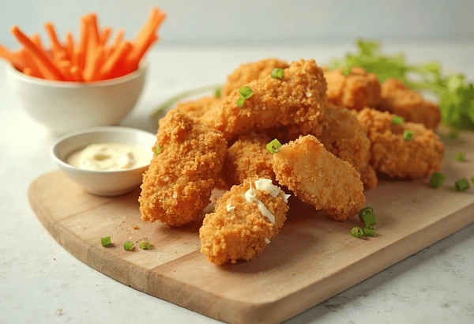

Nuggets Recipe

Crispy, golden chicken nuggets with tender, juicy meat inside—perfect for dipping and snacking.
Chicken nuggets are bite-sized pieces of chicken coated in a seasoned breading and fried or baked until golden and crunchy. They're easy to make at home with simple ingredients and taste far better than store-bought. Perfect for kids, parties, or a quick meal.
Ingredients
- 1 lb boneless, skinless chicken breast or thighs (cut into chunks)
- ½ cup all-purpose flour
- 2 eggs (beaten)
- 1 cup breadcrumbs or panko
- ½ tsp salt
- ½ tsp pepper
- ½ tsp garlic powder (optional)
- Oil for frying (or spray for baking/air frying)
Steps
- Cut chicken breasts or thighs into bite-sized chunks. Season with salt, pepper, and garlic powder if desired.
- Set up a breading station with three bowls: one with flour, one with beaten eggs, and one with breadcrumbs or panko.
- Dredge each chicken piece in flour, dip in the egg, then coat in breadcrumbs. Press lightly to help the crumbs stick.
- Heat oil in a skillet over medium-high heat. Fry nuggets in batches for 3–4 minutes per side until golden and fully cooked. Alternatively, bake at 400°F (200°C) for 18–20 minutes or air fry at 375°F (190°C) for 12–15 minutes, flipping halfway through.
- Drain on paper towels and serve hot with your favorite dipping sauce.
Home